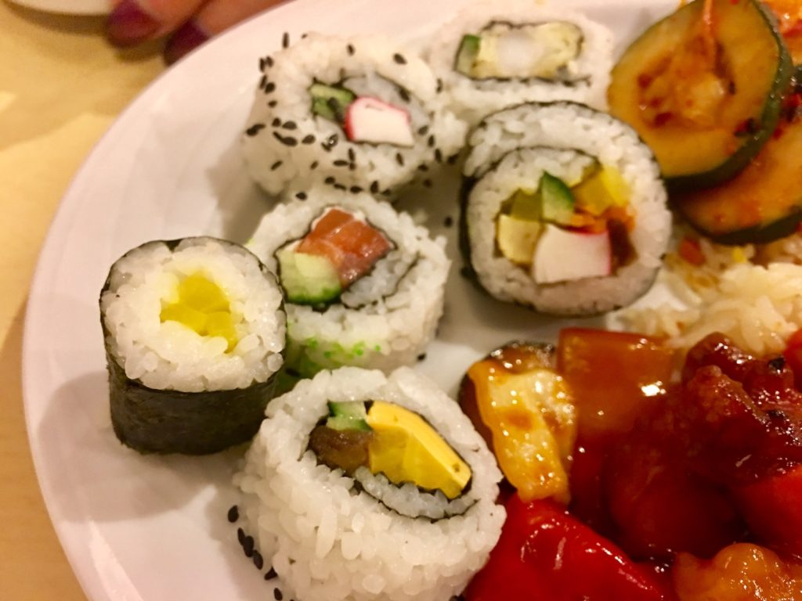
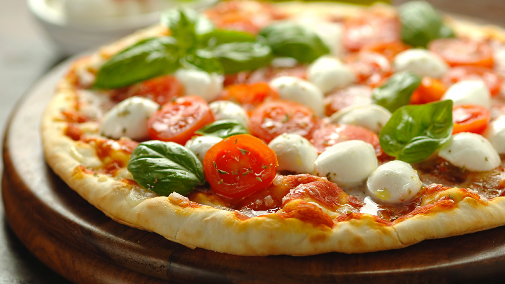
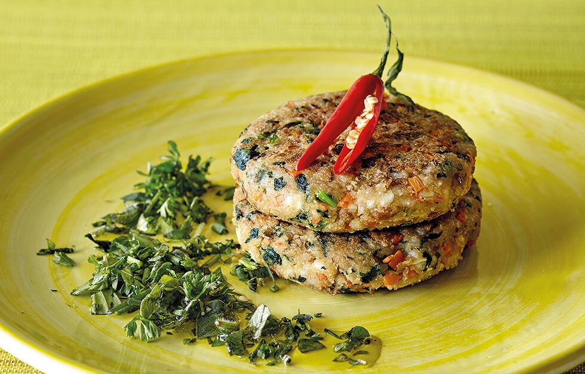

Productos Frescos Y Orgánicos Para Tu
Descubre las mejores recetas de cocina de Directo al Paladar paso a paso. Todos los recetarios de cocina casera.
Discover RecetasDescubre las mejores recetas de cocina de Directo al Paladar paso a paso. Todos los recetarios de cocina casera.
Discover RecetasPastel de cereza
Mira esta deliciosa receta de Pastel de cereza. Bizcocho de chocolate y puré de cerezas.
leer másPastel de caramelo de café
Mira esta deliciosa receta de Pastel de caramelo de café. La crema de café con leche es tan buena.
leer másPastel chocolate
Mira esta deliciosa receta Pastel La mejor receta de chocolate | caramelo con maní
leer másButter Cookie Recipe
1. Precaliente el horno a 170°C/340°F.
Un bol/cuenco grande y Una báscula o un medidor de cantidades
2. En un tazón grande, agregue la mantequilla a temperatura ambiente (o blanda). Agregue azúcar y sal. Mézclalos con una espátula para que el azúcar vuele. Luego cambie a una batidora eléctrica. Mezcle hasta que quede cremoso, pálido y esponjoso.
3. Agregar la yema, la nata y el extracto de vainilla. Mezclar hasta combinar.
4. Tamiza la harina para pastel y la maicena en 2 tandas. Doblar usando una espátula. Tamizar los ingredientes secos restantes hasta que desaparezca la harina.
5. Transferir la masa a una manga pastelera. Estoy usando una punta de 1M. Dobla la manga pastelera si la tuya es delgada como la mía. Una manga pastelera delgada hará que se rompa. También facilitará su tubería.
6. Hornee en horno precalentado a 170°C/340°F durante unos 15-18 min. Durante 15 minutos, las galletas pueden estar más blandas que durante 18 minutos, por lo que realmente depende de qué tan crujientes desee que estén sus galletas.
Hacer pizza parece una tarea sencilla. Al fin y al cabo es una receta basada en harina, agua, levadura y sal. Poco más. Y sin embargo, casi nunca estamos satisfechos con el resultado cuando la hacemos en casa. Nuestra pizza termina pareciéndose, muchas veces, a un pan abierto, una empanada o cualquier otra cosa. En resumen, cada vez que la pifiamos en la intimidad de nuestro hogar un 'pizzaiolo' muere -de vergüenza- en algún lugar del país de la bota.
leer másCAKE POPS
1. Precaliente el horno a 170°C/340°F.
Un bol/cuenco grande y Una báscula o un medidor de cantidades
2. En un tazón grande, agregue la mantequilla a temperatura ambiente (o blanda). Agregue azúcar y sal. Mézclalos con una espátula para que el azúcar vuele. Luego cambie a una batidora eléctrica. Mezcle hasta que quede cremoso, pálido y esponjoso.
3. Agregar la yema, la nata y el extracto de vainilla. Mezclar hasta combinar.
4. Tamiza la harina para pastel y la maicena en 2 tandas. Doblar usando una espátula. Tamizar los ingredientes secos restantes hasta que desaparezca la harina.
5. Transferir la masa a una manga pastelera. Estoy usando una punta de 1M. Dobla la manga pastelera si la tuya es delgada como la mía. Una manga pastelera delgada hará que se rompa. También facilitará su tubería.
6. Hornee en horno precalentado a 170°C/340°F durante unos 15-18 min. Durante 15 minutos, las galletas pueden estar más blandas que durante 18 minutos, por lo que realmente depende de qué tan crujientes desee que estén sus galletas.
leer másArroz para Sushi
Alga nori--------50g
Salmón fresco------------20g
Aguacate------------1g
Azúcar------------1
Sal------------
Comenzamos preparando el arroz. Como ya os explicamos aquí, hacer arroz para sushi es un proceso sencillo. Basta con cocer el arroz (tipo glutinoso o especial para sushi) y después enfriarlo con un abanico tras aliñarlo con vinagre, azúcar y sal. Es conveniente tener todos los ingredientes listos a la hora de preparar el sushi, ya que deben ser productos muy frescos y no conviene perder tiempo en su manipulación. Por eso, prepararemos una juliana de aguacate y haremos lo mismo con el pepino para tenerlo listo cuando vayamos a formar los makis. En cuanto al pescado a utilizar, en este caso cortamos el salmón eligiendo la zona de la ventresca para darle unos cortes en tiras. Aquí podéis ver perfectamente cómo hacerlo. Con todo listo, cortamos la hoja de alga nori en dos, la ponemos sobre una esterilla o makisu forrada de film transparente de cocina dejando el lado rugoso arriba, y sobre ella extendemos el arroz presionando un poco para que se adhiera. En el centro del arroz, colocamos las tiras de pescado, el pepino y el aguacate y opcionalmente, un poco de wasabi, si nos gusta el toque picante de este condimento. Ya solo falta enrollar el alga ayudados con la esterilla y formar un cilindro. A la hora de servirlo hay que cortarlo en 8 porciones, ayudados de un cuchillo humedecido para que no se nos quede pegado el arroz.
leer másPizza
Un bol/cuenco grande y Una báscula o un medidor de cantidades
Queso y tomate------------20g
Carnes y embutidos------------1g
Verduras, setas y hierbas
Azúcar------------1
Sal------------
Hacer pizza parece una tarea sencilla. Al fin y al cabo es una receta basada en harina, agua, levadura y sal. Poco más. Y sin embargo, casi nunca estamos satisfechos con el resultado cuando la hacemos en casa. Nuestra pizza termina pareciéndose, muchas veces, a un pan abierto, una empanada o cualquier otra cosa. En resumen, cada vez que la pifiamos en la intimidad de nuestro hogar un 'pizzaiolo' muere -de vergüenza- en algún lugar del país de la bota.
leer mástortilla

patatas--------50g
------------20g
harina ------------1g
huevo------------1
Sal------------
1. f. Alimento preparado con huevo batido, cuajado con aceite en la sartén y de forma redonda o alargada, al que a veces se añaden otros
3. f. Bol., C. Rica, El Salv., Guat., Hond., Méx., Nic., P. Rico y R. Dom. Torta aplanada hecha con harina de maíz, que se toma rellena o para acompañar algunas comidas.
tortilla de harina
1. f. Guat., Hond. y Méx. Torta circular y aplanada hecha con harina de trigo.
tortilla española
1. f. tortilla en la que se cuajan huevos con patatas previamente fritas.
tortilla francesa
1. f. tortilla hecha solo con huevo.
hacer tortilla algo o a alguien
1. loc. verb. coloq. Aplastarlo o hacerlo pedazos.
volver alguien la tortilla
1. loc. verb. coloq. dar la vuelta a la tortilla.
volverse la tortilla
1. loc. verb. coloq. darse la vuelta la tortilla.
Veggie burger
Cocemos las lentejas y el arroz al punto. Picamos las zanahorias, las espinacas y el diente de ajo muy fino (mejor si usamos picadora) y lo sofreímos con un poco de aceite en la sartén (si se quiere un punto picante, añadir una pizca de cayena en polvo). Mezclamos las lentejas con el arroz y las picamos para obtener una masa uniforme (picada pero no pasta) y lo mezclamos con el sofrito. Una vez mezclado todo vamos añadiendo, poco a poco, pan rallado y vamos trabajando la mezcla hasta que tenga una consistencia que nos permita trabajar la masa. Una vez tengamos todo mezclado, damos forma a la masa: primero haciendo bolas y luego aplastándolas de tal forma que queden tipo hamburguesa. Finalmente le damos un golpe de calor a las “hamburguesas” en la sartén con una gota de aceite y las retiramos del fuego cuando las capas exteriores estén doradas y las servimos calientes con nuestra guarnición favorita.
leer másPizza
Un bol/cuenco grande y Una báscula o un medidor de cantidades
Queso y tomate------------20g
Carnes y embutidos------------1g
Verduras, setas y hierbas
Azúcar------------1
Sal------------
Hacer pizza parece una tarea sencilla. Al fin y al cabo es una receta basada en harina, agua, levadura y sal. Poco más. Y sin embargo, casi nunca estamos satisfechos con el resultado cuando la hacemos en casa. Nuestra pizza termina pareciéndose, muchas veces, a un pan abierto, una empanada o cualquier otra cosa. En resumen, cada vez que la pifiamos en la intimidad de nuestro hogar un 'pizzaiolo' muere -de vergüenza- en algún lugar del país de la bota.
leer máspatatas fritas
Para realizar unas buenas patatas fritas sólo se necesitan dos cosas: un buen aceite y unas buenas patatas. Pero, pese a lo sencillo de su preparación, la mayoría de hogares y restaurantes optan por servir patatas congeladas, pues es mucho más cómodo. Para realizar unas buenas patatas fritas es necesario freír estas –como poco– en dos tiempos, condición imprescindible para que queden crujientes por fuera y blandas por dentro. Las patatas congeladas han sido previamente precocinadas, por lo que podemos ahorrarnos la primera fritura. Pero, claro, no están, ni de lejos, igual de buenas.
leer máspanqueques de crema
180 g de harina blanda (harina de repostería)
2 huevos
200g de leche
30 g de azúcar
2 g de sal
30 g de aceite de cocina
3 g de levadura en polvo